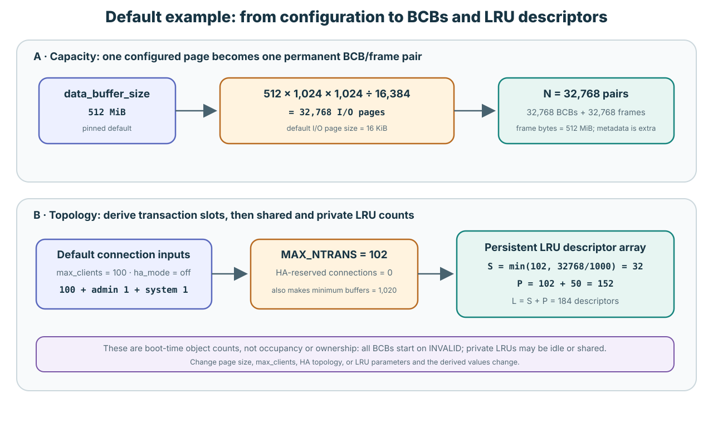
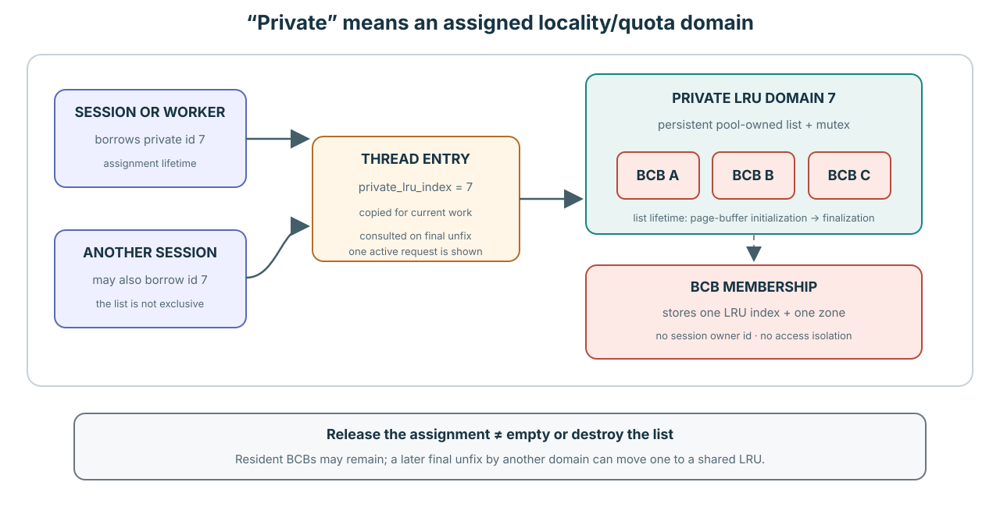
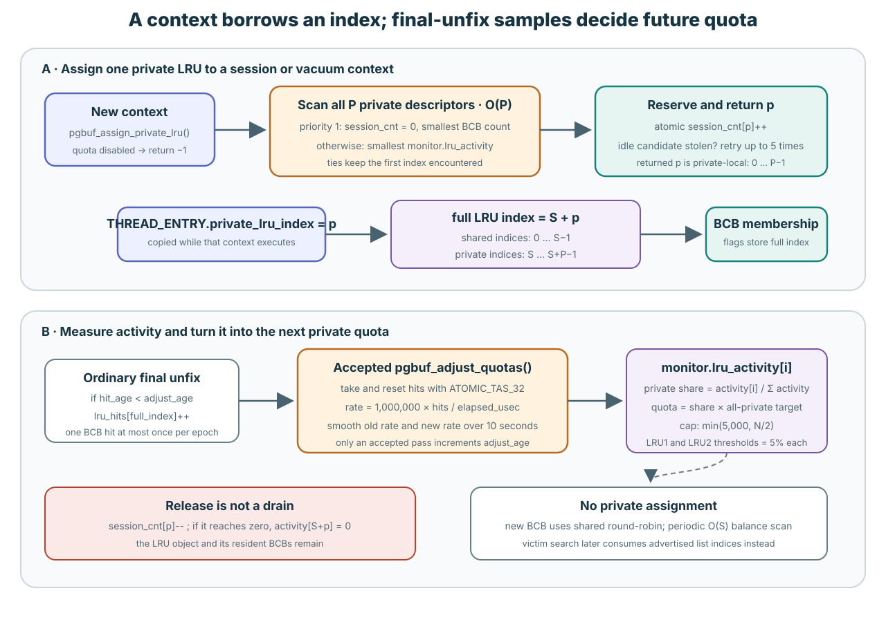
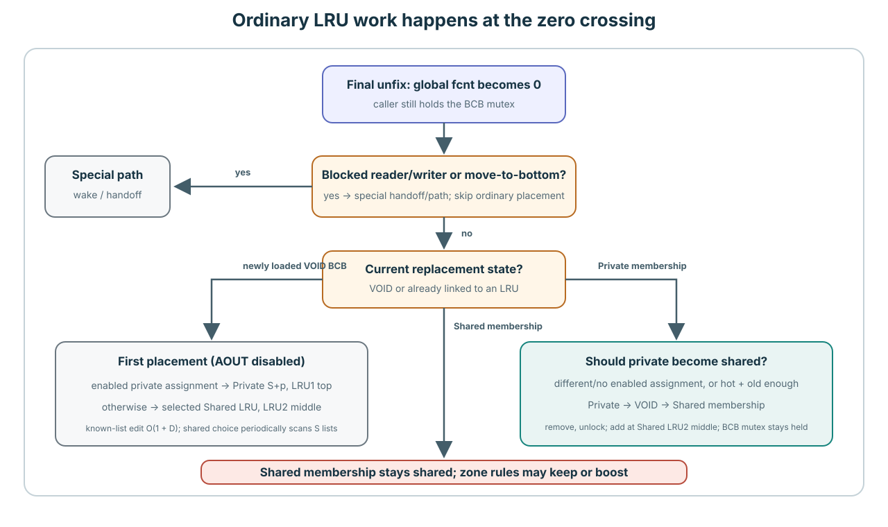
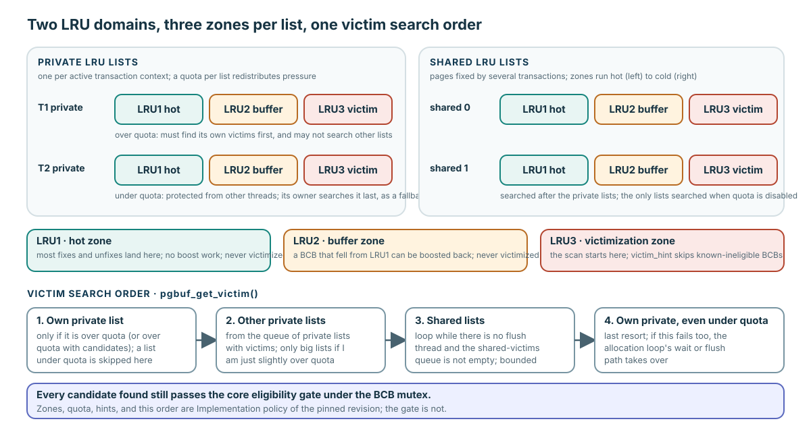

The pool creates lists; a session borrows one list ID
The default 152 is a count of empty private-LRU descriptors created once during page-buffer startup. Starting a transaction does not create 152 lists.
In the pinned server path, session creation asks for one private-local index. Requests for that session copy the same index into their executing thread. A BCB may later join the corresponding list, but neither the session nor the transaction owns that BCB.
One word “index” names three different things

| Value | Range in the worked default | Purpose |
|---|---|---|
Transaction-table tran_index | Not an LRU range | Identifies database work. It is not used as an LRU-array subscript. |
Private-local p | 0 through 151 | Stored as the session/thread's private_lru_index. |
| Full LRU-array index | shared 0–31; private 32–183 | Stored in a resident BCB's list-membership flags. Private conversion is S + p. |
S = 32, P = 152, L = S + P = 184 p = 0 → full LRU index 32 p = 151 → full LRU index 183
PGBUF_LRU_INDEX_FROM_PRIVATE() performs that conversion. The low 16 bits of the BCB flags record one full list index while separate flag bits record one LRU zone; no session owner is recorded. This is why “private” means a locality/quota domain, not access control.
Verified mechanism: page_buffer.c:174–216,510–623,1079–1114.
Descriptors live with the pool; associations live with contexts

- Page-buffer startup:
pgbuf_initialize_page_quota_parameters()computes P. With automatic configuration, P isMAX_NTRANS + 50. - Pool construction:
pgbuf_initialize_lru_list()allocates all S + P descriptors once and initializes every list empty. - Session creation:
pgbuf_assign_private_lru()associates that session with one already-existing private list. It creates no descriptor, BCB, or frame. - Request execution: a worker thread temporarily carries the session's local index. BCB membership can outlive that request and is independent of which transaction fixes the page next.
- Session destruction:
pgbuf_release_private_lru()decrements the association count. It neither empties the list nor moves its BCBs. - Page-buffer finalization: the pool-owned descriptor array is finally destroyed.
Vacuum is a separate context lifetime: enabled vacuum initialization assigns IDs to its preallocated worker records, and the pinned source has no vacuum-side release call before shutdown.
max_clients = 100, HA off, one admin slot, one system transaction, and the compile-time vacuum-worker capacity 50: 102 + 50 = 152. The separately configured worker-pool default is 10; the formula still uses the capacity 50. Change these assumptions or configure the parameter explicitly and P changes; stand-alone mode disables private LRUs.Verified mechanism: page_buffer.c:1713–1787,5740–5800,1921–1981,14513–14624; session.c:300–427,704–745; server_support.c:2069–2087; thread_entry_task.cpp:61–110; vacuum.c:1181–1191,1244–1277.
Implementation policy: automatic P sizing comes from page_buffer.c:13941–13985, system_parameter.c:1569–1580,3802–3813,4171–4182, connection_globals.c:83–111,157–241, log_common_impl.h:48–52, and vacuum.h:121–136.
Prefer an idle, small list; otherwise share the least-active list

- Walk the P private descriptors. An idle descriptor with zero BCBs is already the best primary candidate, so that case ends the walk early; otherwise the walk examines all P.
- Among descriptors with zero associated sessions, remember the one containing the fewest BCBs.
- In parallel, remember the descriptor with the lowest smoothed activity as the fallback.
- Prefer the zero-session candidate, convert its full index to local p, and atomically increment
session_cnt[p]. - If another assignment raced for that idle list, undo and retry up to five times. After the retry budget, sharing is allowed.
- Each request copies p into
THREAD_ENTRY.private_lru_index; this assignment is not recomputed on every page fix.
“Zero sessions” does not mean “zero pages.” Multiple sessions can use the same private LRU, and a release does not empty or move its resident BCBs. The algorithm balances policy domains; it does not allocate a private page cache or BCB ownership to each transaction.
Implementation policy: page_buffer.c:14513–14624; session.c:729–744; server_support.c:2069–2087.
Activity is sampled BCB reuse, not transaction count
On an ordinary final unfix, pgbuf_bcb_register_hit_for_lru() lets one BCB contribute at most one hit in one accepted adjustment epoch. Only an accepted pgbuf_adjust_quotas() increments adjust_age; a daemon attempt every 100 ms does not necessarily increment it because guards may return early.
An accepted pass uses ATOMIC_TAS_32 to take and reset each LRU's lru_hits, converts hits to a per-second rate, and smooths private activity over ten seconds. It then uses the activity shares to adjust quotas. The structural work is O(T + L + D), excluding lock wait.
This number is neither CPU time, number of associated sessions, resident BCB count, nor exact fix count. Assignment consults it only as the fallback when no zero-session descriptor is available.
Implementation policy: page_buffer.c:14251–14511,16580–16610,16994–17009,17146–17161.
Private association does not pin pages to that domain

Ordinary movement occurs only when an unfix changes global fcnt to zero. pgbuf_should_move_private_to_shared() requests migration when the final-unfixing thread's private domain differs from the BCB's private list, or when a same-domain BCB is both hot and old enough.
The path is private LRU → VOID → shared LRU2 middle. The source unlinks under the private-list mutex, releases it, chooses a destination with pgbuf_get_shared_lru_index_for_add(), and links under the shared-list mutex. The BCB mutex stays held between list operations.
A known-node unlink/link is O(1), plus D zone demotions: O(1 + D). Shared destination choice is amortized O(1), with a periodic O(S) balance scan; migration therefore has a periodic O(S + D) case, excluding lock wait.
Verified mechanism: page_buffer.c:6636–7038,8988–9063,10303–10417.
Choose a list first; inspect eligible BCBs second

pgbuf_get_victim() applies this order:
- Own private list, when over quota: try the executing thread's S + p list first only when its quota condition says it is too large. A sufficiently over-quota list also restricts which other private candidates may be borrowed.
- One advertised other-private list: when private quota and the page-flush daemon are available, consume a candidate full index from the private-list queue. The code does not walk every session.
- One advertised shared list: consume a shared-list candidate index. With private quota disabled, this is the only domain searched. Without the page-flush daemon, the guarded branch may consume additional shared advertisements.
- Own private fallback: if the own list was under quota and therefore not tried in step 1, search it now even though it remains under quota.
Each chosen index is passed to pgbuf_get_victim_from_lru_list(). That function examines only the chosen list's LRU3, up to 1,000 positions, and still rejects dirty, flushing, fixed, waited-on, reserved, or mutex-busy BCBs.
Inference: VS-19 records that the restricted big-private queue has no visible initial producer in the pinned source. Do not turn that branch into a progress or fairness guarantee.
Implementation policy: list selection is at page_buffer.c:9067–9253,16370–16567. Verified mechanism: selected-list eligibility and the revocable direct-victim path are at page_buffer.c:8181–8403,9256–9538,15420–15652.
Trace session A without inventing ownership
Use S = 32 and P = 152. Session A receives local p = 7, so its full private-list index is 39. A request loads page X and final-unfixes it into list 39. Session A then ends, but X remains there. Session B later receives p = 7 and accesses X.
Explain why no LRU was created for either session, why B can access X, why release did not move X, and which full index the victim selector uses. Then repeat with A's list under quota and name exactly when that own list is searched.
Use the Advanced page for the full policy and cost derivation
Open the canonical private-LRU explanation →
← Return to Lesson 0012 · Continue to optional Lesson 0012A: AOUT aside →